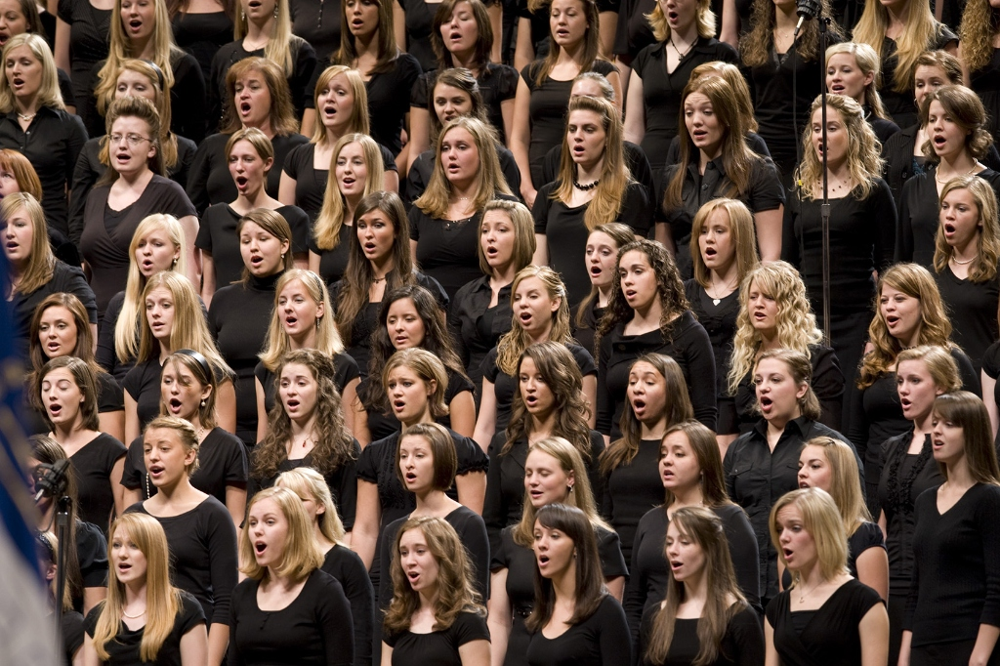
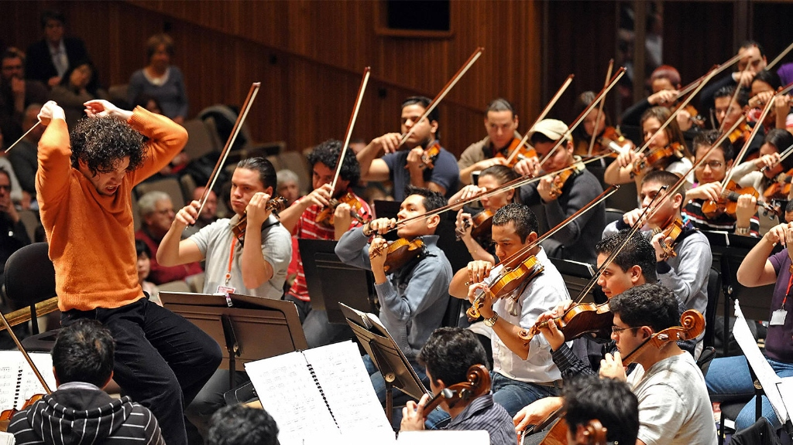
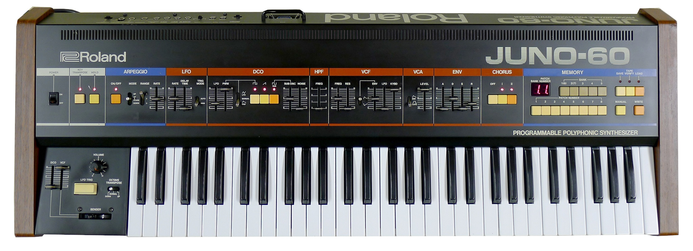

Understanding the Juno-60 Chorus
Why even care about chorus?
It's just some confusing audio effect that makes stuff sound "retro" and "cool". Well, if you claim to be an engineer, artist, or musician, then many valuable lessons about physics and sound itself can be derived from a brief lesson on chorus. In this short article, we will discuss chorus from its humble beginnings to its fascinating (and intuitive) mathematics.
The Goal: The goal of chorus is to make a duplicated, detuned signal.
In the digital age, this is a trivial operation. However, performing this in the past was much more involved, and understanding why it works requires a bit of psychoacoustics:
The psychoacoustic illusion
Our ears are incredibly sensitive to small differences in pitch and timing. When two nearly identical signals are played together with slight detuning, they interfere with each other, producing slow fluctuations in amplitude known as beating. Instead of hearing two separate sounds, the brain fuses them into a single, richer source. The result feels wider, thicker, and more “alive” because it mimics the natural inconsistencies of real performers.
The three core ingredients
At its heart, every chorus effect is balancing three variables:
A slight detune, often modulated over time, creates the sense of multiple sources rather than a static duplicate.
A short delay, usually in the range of a few milliseconds, separates the signals just enough to avoid perfect overlap.
Blending the dry and processed signals determines how subtle or exaggerated the effect feels.
Chorus vs. flanging vs. vibrato...?
Lets clarify one thing. These effects all come from the same family, but they live in slightly different regions of parameter space:
- Chorus uses moderate delay times and gentle modulation, producing a smooth, ensemble-like thickening.
- Flanging uses extremely short delays, often under 10 ms, which creates pronounced comb filtering and a sweeping, metallic sound.
- Vibrato removes the dry signal entirely, leaving only the pitch-modulated version, so instead of thickness, you hear pure pitch wobble.
The History of Chorus
Chorus, at its core, is a beautifully simple illusion: take one sound, make a few slightly different copies, and let their tiny imperfections blur together into something richer, wider, and alive. But getting to that “simple” idea took over a century of clever hacks, physics tricks, and evolving technology.
It all starts in the most human way possible, literally. Before electronics, chorus was a chorus: multiple singers or musicians performing the same part at once. No two performers are perfectly in tune or time, and those tiny differences create a natural thickness and shimmer. Orchestras rely on the exact same principle. A single violin can be expressive, but a section of violins, each player with slightly different intonation, bow pressure, and timing, creates that lush, cinematic wall of sound we associate with a full ensemble.


Instrument makers chased this effect too. Pianos, for instance, often use multiple strings per note, subtly detuned to produce that same lush beating. The mandolin and 12-string guitar also uses pairs of strings per note, tuned in unison, to produce a brighter, more shimmering tone.
In the mid-1800s, pipe organ builders took things further with the Voix céleste stop, pairing slightly detuned pipes to create a slow, pulsing interference. It was one of the first intentional, built-in “chorus effects”, purely acoustic but unmistakably familiar to modern ears.
By the 1940s, things started to move, literally. Originally invented to fix the static, lifeless tone of electronic organs and simulate the spatial acoustics of a large pipe organ, the Leslie speaker introduced motion into the equation. Rotating horns and drums created pitch shifts via the Doppler effect, along with swirling changes in volume and tone. For the first time, chorus was not just about detuning. It was about modulation, a key ingredient that still defines the effect today.

2 = Compression driver
3 = Treble motor
4 = Crossover
5 = Bass motor
6 = Woofer
7 = Drum enclosure
8 = Drum
9 = Cabinet
(Amplifier not pictured)
Leslie speakers (also called rotary speakers) were designed to give electronic organs a more expressive, "alive" sound. This way, they could mimic the richness of a pipe organ. They were most famously paired with Hammond organs.
Then came tape. In 1966, Beatles engineer Ken Townsend developed Automatic Double Tracking, or ADT, at Abbey Road Studios. By running a second tape machine slightly out of sync, and even modulating its speed, he could create a moving, detuned copy of a signal. This introduced a new layer of complexity: delay-based effects and the strange, swooshing patterns of comb filtering. Chorus and flanging were born from the same tape-warped DNA.
The late 1960s brought a major leap with the bucket-brigade device, or BBD. These circuits passed audio through chains of capacitors, effectively “sampling” it in discrete steps. It was not fully digital, but it was not purely analog either, an in-between world of discrete time. By modulating the clock speed, engineers could vary delay time and subtly shift pitch, creating the warm, wobbly chorus sounds that defined countless pedals and synths in the 1970s and 1980s.

Finally, digital technology cleaned everything up. Digital delay lines removed the noise and distortion of BBDs, and by the 1990s, advanced pitch-shifting algorithms allowed for precise, stable detuning, or wildly complex modulation, without the quirks of earlier hardware.
And that is the journey: from human imperfection, to pipes and spinning speakers, to tape machines and capacitor chains, to pristine digital algorithms. Every step chased the same goal, turning one voice into many, and every era left its own sonic fingerprint on the lush, shimmering effect we now simply call chorus.
Effect Mathematics
Chorus may feel lush and mysterious, but under the hood it is built on a remarkably simple idea: mix a signal with a slightly delayed, constantly shifting copy of itself. That entire world of shimmer and width can be described with one equation:
To understand why this equation creates such a lush sound, we have to look at what each term is doing to the audio:
- \(x(t)\): This is your dry, input signal. It provides the grounding and pitch stability.
- \(d_0\): The base delay. Typical chorus effects use a base delay of 10 to 30 milliseconds. This is just long enough to separate the voices, but short enough that our brain doesn't hear them as a distinct "echo" (the Haas Effect).
- \(A \cdot \sin(2\pi f t)\): This is the LFO (Low Frequency Oscillator). It is a slow-moving wave that continuously adjusts the delay time. \(A\) determines the depth (how far it moves), and \(f\) determines the rate (how fast it moves).
- \(y(t)\): The final output signal: the sum of the dry and modulated signals.
The Pitch-Delay Relationship
The real magic happens because of a simple physical principle: changing delay time is equivalent to changing pitch. This is effectively the digital version of the Doppler Effect.
Think of the read pointer in a delay buffer like a listener moving toward or away from a sound source. When the LFO shortens the delay (\(d(t)\) decreases), the "distance" to the source is shrinking, which shifts the pitch upward. When the delay lengthens, it shifts the pitch downward.
Mathematically, the instantaneous frequency shift is proportional to the derivative of the delay function:
Because the derivative of a sine wave is a cosine wave, the pitch shift itself is also periodic. The result is a copy of your audio that is constantly "warping" its pitch in and out of tune with the original. When mixed together, these tiny, moving phase cancellations create the characteristic shimmer and beating we associate with chorus.
Stereo Image from a Mono Source
One of chorus’s most compelling tricks is its ability to take a mono signal and expand it into something that feels wide and immersive. This is often achieved by duplicating the modulation structure across two channels, but with a crucial twist: the modulation is inverted.
When the left channel’s delay is increasing, the right channel’s is decreasing. This 180° phase relationship between modulation sources creates a constant push and pull in pitch and timing. The ear interprets this opposition as spatial separation, even though both channels originate from the same source.
DSP Implementation: Building a Chorus from Scratch
At this point, chorus is no longer magic. It is a system. And like any good system, we can build it piece by piece until it starts to sing.
The Circular Delay Buffer
Everything begins with memory. A chorus needs to look into the past and continuously vary how far back it reaches. The most efficient way to do this is with a circular (ring) buffer.
import numpy as np
class DelayBuffer:
def __init__(self, max_samples):
# Initialize an empty array to store the audio history
self.buffer = np.zeros(max_samples)
self.size = max_samples
self.write_index = 0
def write(self, x):
# Add a new audio sample to the buffer, wrapping around to the start if full
self.buffer[self.write_index] = x
self.write_index = (self.write_index + 1) % self.size
def read(self, delay_samples):
# Retrieve a sample from the past
read_pos = self.write_index - delay_samples
while read_pos < 0:
read_pos += self.size
# Linear interpolation for smooth fractional-delay reads
i0 = int(read_pos)
i1 = (i0 + 1) % self.size
frac = read_pos - i0
return self.buffer[i0] * (1 - frac) + self.buffer[i1] * fracThe LFO
A chorus lives and dies by its modulation. We use an accumulator-based LFO to give the system motion.
import math
class LFO:
def __init__(self, freq, sample_rate):
# Define the starting phase and how much it moves forward per sample
self.phase = 0.0
self.increment = freq / sample_rate
def tick(self):
# Advance the oscillator one step and wrap around if passing 1.0
self.phase += self.increment
if self.phase >= 1.0:
self.phase -= 1.0
if self.phase < 0.5:
# First half of cycle: ramp down
return 1.0 - (4.0 * self.phase)
else:
# Second half of cycle: ramp up
return -1.0 + (4.0 * (self.phase - 0.5))Wet/Dry Mixing and the Juno Ratio
Many digital choruses default to a simple 50/50 mix, but the classic Roland Juno chorus does something more interesting. The processed signal is actually slightly quieter than the dry, attenuated by exactly −1.62 dB of relative gain.
dry_gain = 1.0
wet_gain = 10 ** (-1.62 / 20.0) # ≈ 0.83
Why isn't it much quieter? It is easy to look at the math and assume that because 0.83 is somewhat far from 1.0, the wet signal is getting buried. However, we have to remember that human hearing works in decibels (which are logarithmic). A multiplier of 0.83 translates to only a −1.62 dB drop, which to our ears is a very subtle difference in loudness. The chorus effect still sounds incredibly prominent alongside the dry signal!
Key Parameters: Juno Modes
| Parameter | Mode I | Mode II | Mode I+II |
|---|---|---|---|
| LFO rate | ~0.5 Hz triangle | ~0.83 Hz triangle | ~8–10 Hz sine |
| LFO depth | High | High | Low |
| L/R phase | 180° inverted | 180° inverted | 180° inverted |
| Wet/dry mix | ~−1.62dB | ~−1.62dB | ~−1.62dB |
Juno Chorus In Action:
Mode I is a slow, gentle chorus (~0.5 Hz triangle).
Mode II is faster and more animated (~0.83 Hz triangle).
Mode I+II switches to a fast sine LFO (~9 Hz) with low depth, producing a tight vibrato-like shimmer.
Integration into the Synth Signal Chain
Placement is not a detail; it is part of the sound. In a classic Juno-style architecture, the chorus sits near the end of the signal path:
Final Thoughts
The Juno chorus is a reminder that musical richness does not need to be complex. Richness comes from carefully chosen deformities that reinforce each other.
A single delay line. A simple LFO. A fixed stereo inversion. A slightly noisy implementation with no attempt to be mathematically clean. And yet the result is one of the most iconic audio effects ever built.
Chorus works because it commits to being perfectly imperfect.

Sources
- Helpful repo that provides an analysis on the Juno-60 chorus: github.com/pendragon-andyh/Juno60
- WebAudio API emulation of the classic Roland Juno-60 synthesizer: github.com/pendragon-andyh/junox (demo)
- A collaborative reverse-engineering discussion using a "gray-box" method: github.com/jpcima/rc-effect-playground
- Comparative reference covering modulation rates, basic delay times, and BBD chip variations across all Roland pre-digital chorus circuits: florian-anwander.de
- Thread discussing key LFO parameters from the official manuals: kvraudio.com
- A hands-on teardown and standalone build using a real 106 chorus board. Explains the control signals (I/II mode logic, HPF switching, VCA): hkadesign.org.uk
- A brief history of the Juno Synth line: perfectcircuit.com
- Video explaining Bucket Brigade Delay (BBD): youtube.com
- An (Excellent) history of chorus: youtube.com
Relevant VSTs
- TillySynth (by me!): github.com/RobertTylman/TillySynth
- A free Juno-60 chorus emulation from TAL Software: tal-software.com
- A paid Juno-60 chorus plugin by Roland: roland.com